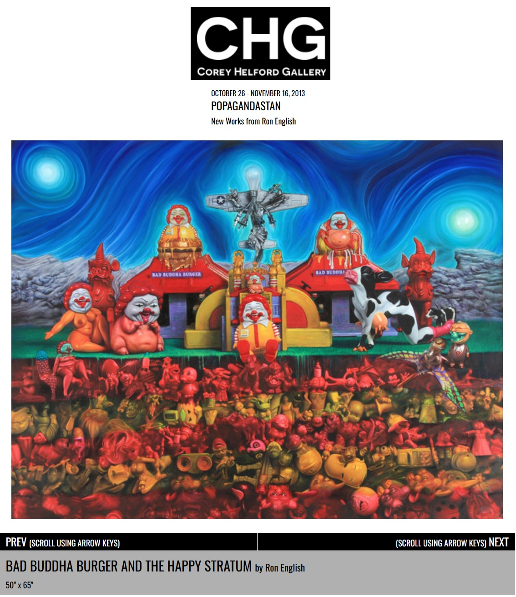

Exhibitions
POPAGANDASTAN – New Works from Ron English, Corey Helford Gallery, Los Angeles, California, US, October 26–November 16, 2013.
Literature
Ron English, Fauxlosophy (Darlington: Carpet Bombing Culture, 2016), p. 144. ISBN 978-1-908211-45-3.
Ron English, Death and the Eternal Forever (London: Korero Press, 2014), p. 68. ISBN 978-0957664920.
Ron English, Status Factory: The Art of Ron English (San Francisco: Last Gasp of San Francisco, 2014), p. 194. ISBN 978-0867197891.
Notes
Also known as Bad Buddha Burger and the Happy Stratum.
This work appears on Corey Helford Gallery’s artwork page for the exhibition Popagandastan, available here, accessed April 11, 2026.
Ancillary Documentation
